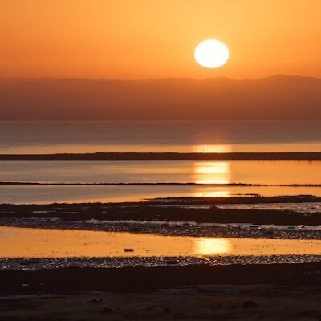
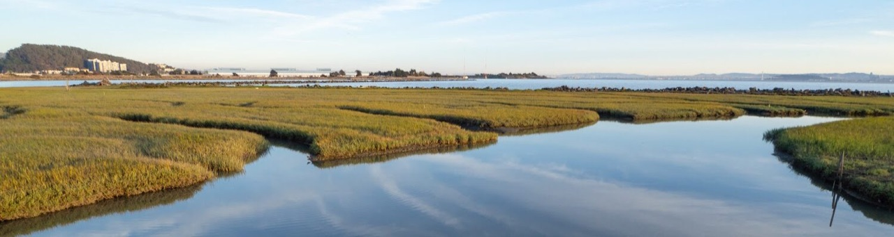
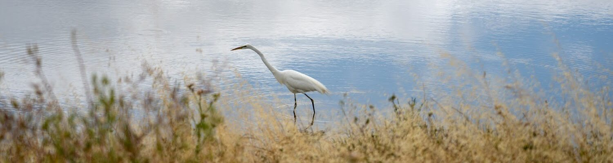
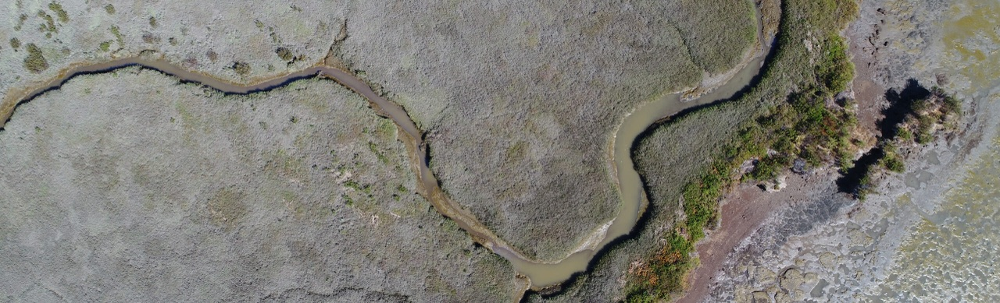
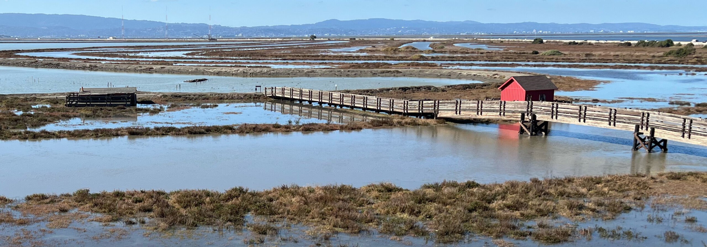
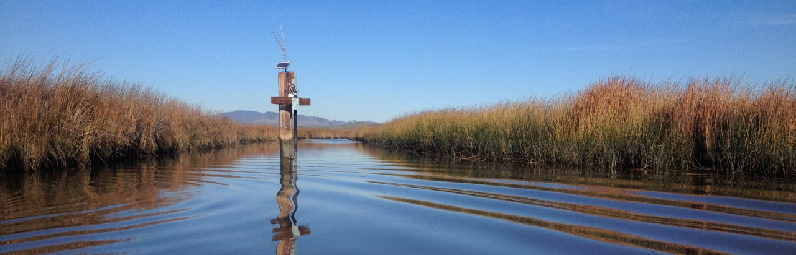
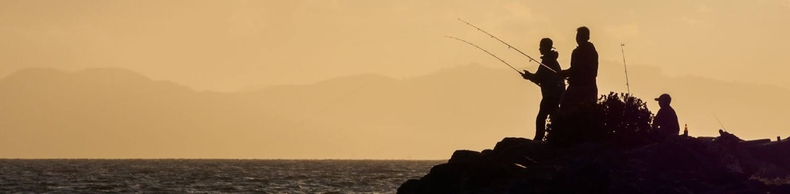

Monitoring Results
The WRMP collects data about the status and trends of the region’s tidal wetlands.
Topics
The WRMP’s monitoring addresses topics relevant to tidal wetlands, the wildlife and plants they support, and people who use the Bay and its shoreline.

Baylands Geography Location and size of marshes, tidal flats, transition zones, riparian corridors, and channel networks Explore
Wetland Condition California Rapid Assessment Method (CRAM) data and other indicators of wetland development and health Explore
Fish & Wildlife Distribution, abundance, and species composition of animals Explore
Plant Communities Plant species composition, abundance and distribution Explore
Wetlands & Sea Level Rise Wetland surface elevations, sediment deposition patterns, and sea levels Explore
Water Quality Water data such as temperature, dissolved oxygen, salinity, nutrients, suspended sediment, and pollutants Explore
People & Wetlands Stewardship and access to wetland benefits ExploreData, Tools, and Science Framework
Metrics
GALLERYEvery WRMP metric, browsable and filterable by monitoring topic.
Related datasets
DATA CATALOGEstuary tidal wetland data, filtered by subregion, topic, source, WRMP indicator, or location.
Data visualizations
MAPSInteractive maps and StoryMaps built from WRMP monitoring data.
Data Sharing Policy
POLICYDirection for sharing data, in alignment with the WRMP Program Plan.
Monitoring Site Network
WEB MAPPriority monitoring site networks mapped across the estuary’s operational landscape units.
EcoAtlas WRMP Profile tool
WEB TOOLTidal wetland extent, restoration status, unvegetated to vegetated ratio and elevation capital, summarized for any area you draw.
Surface Elevation Table and water level stations
WEB MAPEvery SET and water level monitoring station in the estuary, on one interactive map.
Data Catalog Upload Tool
UPLOADSubmit validated estuary tidal wetland data and its metadata to the catalog.
What and where is the tidal marsh ecosystem?
What external drivers are impacting tidal marshes?
What new information do we need?
How effective are policies and programs?
How is public health and safety impacted?
Technical documents
DOCUMENTSGovernance documents, Standard Operating Procedures, and summary reports describing monitoring findings.